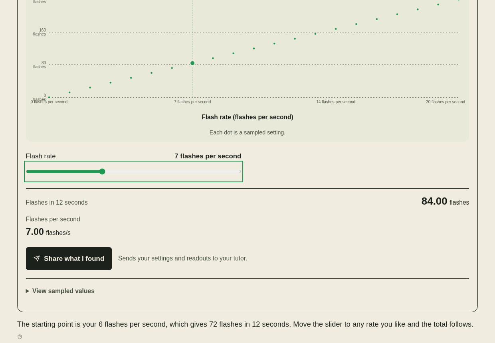

Inside the classroom
The stage light and two versions of a typed tile answer ran live. Four other classroom activities replay the exact published tutor replies from the study.

The stage light and two versions of a typed tile answer ran live. Four other classroom activities replay the exact published tutor replies from the study.
